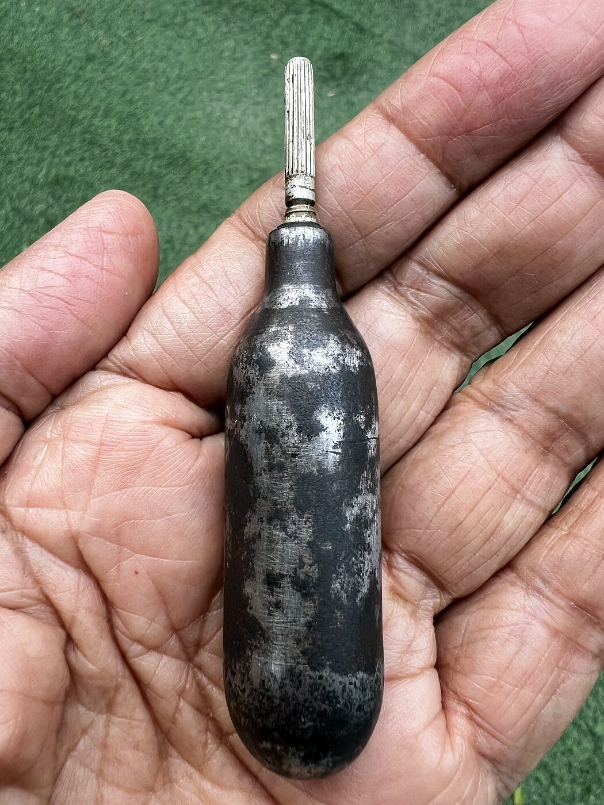

आज मैं अपने घर की पुरानी चीज़ों की अलमारी देख रहा था, तो कोने में पड़ी यह चीज़ दिखी—जिसे मैंने 1960 के दशक में एक-दो बार इस्तेमाल किया था। मच्छरों का एटम बम!

आजकल मच्छरों को भगाने के लिए हमारे पास स्मार्ट मशीनें हैं, खुशबूदार कॉइल हैं, या फिर ऐसे स्प्रे हैं जिन्हें दबाते ही गुलाब की खुशबू आती है और मच्छर भी मानो 'थैंक यू' बोलकर धीरे से बाहर निकल जाते हैं। लेकिन उस ज़माने में मच्छरों से कोई 'रिक्वेस्ट' नहीं होती थी, सीधे 'सर्जिकल स्ट्राइक' होती थी—और वो भी इस छोटे से लोहे के 'बम' से!
तस्वीर में दिख रही करीब साढ़े आठ सेंटीमीटर की यह भारी-भरकम लोहे की चीज़ कोई मिनी मिसाइल या किसी पुरानी साइकिल का पुर्जा नहीं है। यह हमारे बचपन के ज़माने का 'एरोसोल बग बॉम्ब' (Aerosol Bug Bomb) है।
इसकी कहानी शुरू होती है दूसरे विश्व युद्ध (1941) से, जब अमेरिकी कृषि विभाग के दो वैज्ञानिकों, लाइल गुडह्यू और विलियम सुलिवन, ने सैनिकों को मलेरिया वाले मच्छरों से बचाने के लिए इसे ईजाद किया था। फौज वाला वह पहला 'बग बॉम्ब' काफ़ी बड़ा था: लगभग आधा किलो का भारी लोहे का डिब्बा। युद्ध खत्म होने के बाद यह 'फौजी हथियार' आम घरों में मच्छरों की बैंड बजाने के लिए उतर आया। हमारी अलमारी वाला यह साढ़े आठ सेंटीमीटर का छोटा सिलेंडर शायद उसी तकनीक का बाद में बना घरेलू, छोटा रूप है।
इसके काम करने का तरीका किसी फिल्मी सीन से कम नहीं था:
60 के दशक में जब डिस्पोज़ेबल टिन के डिब्बे आसानी से नहीं मिलते थे, तब लोहे के ये मज़बूत, छोटे सिलेंडर ही हर घर के असली 'मच्छर मारक' हुआ करते थे। अलमारी के कोने से निकली यह छोटी सी चीज़ सिर्फ लोहे का टुकड़ा नहीं, बल्कि हमारे बचपन की एक मज़ेदार याद है।
(नीचे लगे वीडियो में देखिए कि यह पुराना 'हथियार' दिखने में कैसा है और इसकी बनावट कितनी ठोस है!)